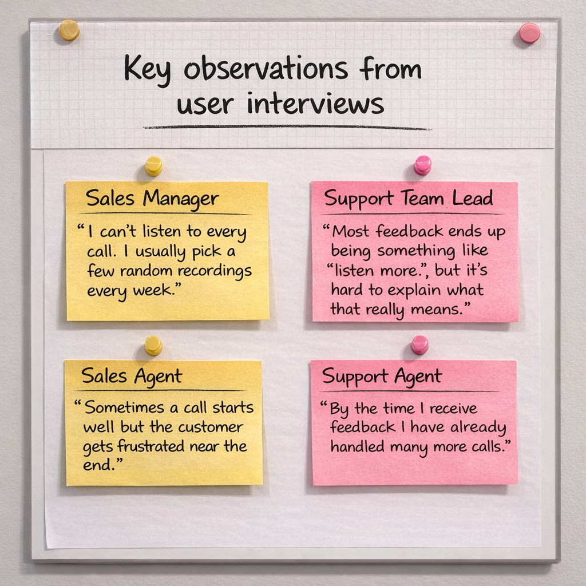
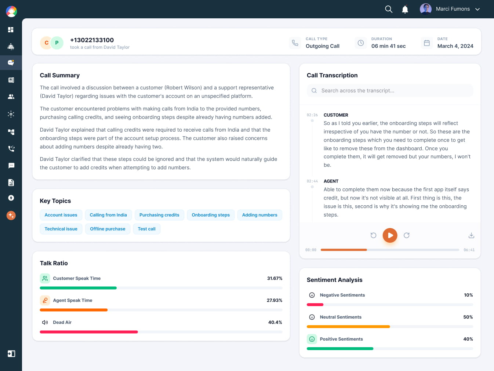
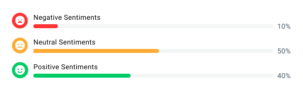
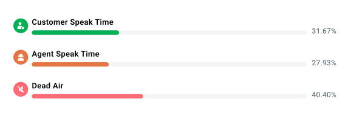

Designed an AI Copilot adopted by 22+ customers for call coaching
Overview & Context
Sales and support teams run thousands of conversations every week, but very little of that knowledge actually turns into learning. While working on CallHippo, we discovered a major gap between call recording and real coaching. Teams had recordings, but almost no scalable way to understand what was happening inside those conversations.
Managers wanted to help their teams improve, but listening to hundreds of calls every week was impossible. This project explored how AI could transform raw call recordings into actionable coaching insights for managers and agents.
Role
Product Designer and UX Lead
Team
Product Manager, 2 Engineers, Data Science team
Tools
Figma, Mixpanel, Notion
Timeline
3 weeks design, 6 week rollout

Problem
CallHippo powers millions of calls every month across sales and support teams — but managers had no scalable way to evaluate conversation quality.
Most managers listened to only a few random recordings each week. In many teams, less than five percent of calls were ever reviewed. This created a fundamental coaching gap.
As a result:
Managers relied on intuition instead of data when coaching agents, with no measurable baseline for what made a call successful.
Feedback often arrived days after a call happened, making it difficult for agents to connect coaching to specific conversations.
Agents received vague advice such as "listen more" or "sound confident" without any measurable context to act on.
The core problem was not lack of effort. The problem was lack of visibility.
Design Goals
Baseline
Manual call reviews
Small sample of calls reviewed,Coaching based on guesswork
Goal
AI-assisted coaching
Understand call quality without listening
Outcome
22+ customers adopted AI Copilot
Teams actively use AI Copilot to review and improve conversations.
Research

To understand how teams currently reviewed calls, I interviewed and observed 14 users across sales and support organizations — sales managers, support team leads, and frontline agents.
🎯 Managers lacked reliable data
Most coaching decisions were based on quota numbers or customer complaints — not actual call quality.
📣 Agents wanted actionable feedback
Advice like "be more confident" felt subjective and impossible to act on. Agents wanted clear, specific signals they could improve.
📊 Talk-to-listen ratio was never measured
Experienced managers consistently mentioned that good reps listen more than they talk — yet this behavior was never tracked anywhere in the product.
Defining the Opportunity
After synthesizing research, I ran a prioritization session with the product manager and engineering lead. We mapped potential features based on user value and implementation complexity. Our guiding question was simple: How might we help managers understand call quality without listening to every recording?
Four capabilities emerged as the foundation of the first release
Sentiment Analysis
Visualize emotional tone across a call so managers can instantly identify conversations that ended negatively — without listening to a single recording.
Topic Extraction
Automatically surface what customers are actually talking about across hundreds of calls — without managers needing to listen to each recording.
Key Insights
The same patterns emerged consistently across team sizes and industries. Four insights shaped the core of the design.
Insight 01
Managers did not lack coaching skills — they lacked reliable data
Most decisions about who to coach were based on quota numbers or complaints, not actual call quality. Coaching happened reactively, not systematically.
Insight 02
Agents wanted feedback but struggled with vague guidance
Advice such as "be more confident" felt subjective and difficult to act on. Agents needed specific, measurable signals they could improve against.
Insight 03
Sentiment shifts inside calls were completely invisible
A conversation could begin positively and end with frustration, but there was no way to detect when or why the change happened. Teams had no signal for call quality beyond outcome.
Key User Needs
Sales Manager
Pain: Could only review a handful of calls per week — no way to evaluate team performance at scale.
Consequence: Coaching was reactive, often based on gut feel or customer complaints rather than conversation data.
Need: A system that automatically surfaces call quality signals across every conversation so coaching is proactive and consistent.
Frontline Agent
Pain: Received vague feedback like "sound more confident" with no measurable context to understand or improve.
Consequence: Agents had no way to self-reflect or improve between calls, leading to stagnant performance over time.
Need: Clear, specific post-call insights that help agents understand exactly what to improve in the next conversation.
Product Flow
Before designing the interface, I mapped the full coaching loop from the moment a call ends. Two requirements became clear: managers needed a fast triage layer to identify problematic calls, and agents needed feedback immediately after each call while the context was still fresh.
Manager flow: Open dashboard → identify flagged call → review AI insights → provide coaching note
Agent flow: Receive post-call feedback → review call insights → adjust behavior in next call
Use sentiment analysis to let managers instantly see which calls ended negatively — without listening to a single recording.
Surface talk-to-listen ratio as a measurable coaching signal so feedback is grounded in behavioral data, not opinion.
Generate automatic call summaries so agents can review what happened, what was promised, and what the next steps are — without manual note taking.
Solution
The AI Copilot translated raw conversation data into clear signals that both managers and agents could understand quickly. Four features formed the core of the experience.
Copilot Overview

1. Sentiment Analysis
Managers needed a fast way to understand how conversations were ending without listening to recordings. The sentiment view visualized emotional tone across three states — negative, neutral, and positive — allowing managers to immediately focus on conversations where sentiment dropped.
2. Topic Extraction
AI Copilot automatically extracted key topics from each conversation and displayed them as scannable tags — pricing questions, coverage details, product features — surfacing customer concerns that had previously been hidden inside long recordings.
Feature 1
Sentiment Analysis
Managers needed a fast way to understand how conversations were ending without listening to recordings. The sentiment view visualized emotional tone across three states: negative, neutral, and positive — each shown as a simple progress bar supported by expressive icons. Instead of randomly sampling calls, managers could now focus immediately on conversations where sentiment dropped.
Sentiment in action

Design rationale
Sentiment is shown as three simple progress bars — negative, neutral, positive — with expressive icons anchoring each state. Managers can understand overall call quality in seconds without needing to open a single recording.
This allowed managers to triage their coaching queue by call outcome rather than selecting calls at random.
Feature 2
Topic Extraction & Talk-to-Listen Ratio
Surface what customers are actually saying
AI Copilot automatically extracted key topics from each conversation and displayed them as scannable tags. The compact layout allowed managers to scan dominant themes across calls in seconds — surfacing customer concerns hidden inside long recordings.

Feature 3
AI Call Summary
After each call, agents needed to document what happened, what was promised, and what the next steps were — but this was often skipped because the next call arrived immediately. AI Copilot automatically generated a structured summary including key discussion points, customer intent, and suggested follow-ups.
Key discussion points — What was covered during the call, automatically extracted from the transcript.
Customer intent — What the customer was trying to achieve or resolve during the conversation.
Suggested follow-ups — Agents could review the summary instantly or push it directly into their CRM, removing the burden of manual note taking.
Results
100% call review coverage — up from ~5%
AI Copilot automatically analyzed every call, replacing random spot-checks with complete coverage across all 200+ teams in the rollout.
Scoring consistency improved from 3 to 8 out of 10
Standardized AI scoring reduced manager disagreement, creating a shared language for evaluating call quality across the organization.
Managers shifted from reactive to proactive coaching
Instead of waiting for performance issues, managers could identify patterns across their team in real time and act before problems escalated.
An unexpected benefit: product and marketing insights
Extracted conversation topics revealed how customers actually described the product — becoming valuable input for messaging and roadmap decisions beyond the sales team.
What I Learned
AI features require strong transparency
When users understand how a score is calculated, they trust the system far more. Exposing the reasoning behind AI outputs was critical to adoption.
Framing feedback as growth, not grades
Numbers presented as grades created defensiveness. The same numbers framed as growth indicators encouraged improvement and self-reflection.
Design for skeptical users first
Once the system proved reliable to experienced managers, adoption spread quickly across teams. Winning over the skeptics built trust that accelerated the broader rollout.